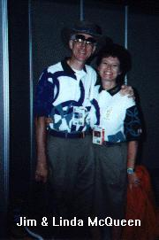
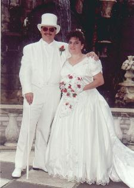
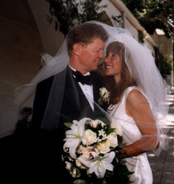

Other Jim McQueens on the Net
As of July 13, 1999
Of course, there's me.
Jim McQueen, Emily Alanoff, and Barbara Goerge Reiss in
Sylvia,
at the Zachary Scott Theatre in
Austin, Texas.

Jim McQueen
is Vice President of the Ontario Secondary School Teachers' Federation.

I came across this picture somewhere on the net a year or two ago.
I'll be darned if I can remember where.
If I can find it again, I'll update this info and provide a link to it.

Jim McQueen used to have a home page in Tampa Bay.
When I looked recently, it was gone. But I have this picture,
and it's too cool to remove. Maybe I'll find his page again someday.
He married Karen in white... I got married in white too, but I didn't
have a top hat and a cane. Nice touch, Jim.

Jim and Laura McQueen
got married at the Surf and Sands hotel in Laguna, California.
Jim and Barbara McQueen wrote some books about Orchids of Brazil.
While updating this list, I learned that he had passed away.
Jim McQueen was listed as President of the Board of
Heights Community Congress in Cleveland Heights, Ohio in 1994.
There's a Jim McQueen in Ohio who's a soccor referee.
Wish he'd send them his picture... I wonder if he's the guy from Cleveland Heights?
I found another Jim McQueen playing soccer in Scotland. I e-mailed the team; Graham Anderson was nice enough to write:
"Jim McQueen joined us from Clyde in an emergency (all our `keepers were injured) and played half a season. He was previously with livingston for 10 years now plays junior with NewtonGrange. He is also a fireman in Edinburgh."
I've found a couple of golf references...
Anybody know if these are the same guy?
There's a Jim McQueen
who's the golf pro at the Mountain Air Golf And Country Club
in Burnsville, North Carolina.
Jim McQueen sat on the USA Table Tennis Board of Directors
This is in North Carolina, too. Maybe he's the golf pro... He might be one of these USOTC guys, but I don't know which one. Hey, wait, is the guy in the middle the same face as Linda McQueen's husband (above)?
There's the Commonwealth Air Training Plan Museum in Manitoba, Canada.
Jim McQueen is on the acquisitions committee.
I found Jim McQueen/Cadmus/Byrd Operations in some kind of meeting about computer printing... He's in Tampa too. I wonder if that's the guy in the white tux?
Jim McQueen is an account manager for small Onan engines in Phoenix, AZ.
There's a Canadian hockey trainer named Tim Toker who quoted a reference from "Jim McQueen, Strength and Conditioning Coach, Dallas Stars Ice Hockey Team".
There's a Jim McQueen who's a "Production Planner", and who's written reviews of several cruise ships, including the Monarch of the Seas.
I don't know what a "Marzocchi Zokes Pro" is;
but Jim McQueen, a cross-country rider from Poland likes 'em.
There's a Jim McQueen who wrote about a card deck for game called "The Magic Dojo".
I've found a report by the Minnesota Department of Transportation that referred to "Jim McQueen, Associate Administrator Federal Railroad Administration".
There's a Jim McQueen who has a pretty rudimentary home page here.
His friend Si Dinh has a better page.
The last time I used the Yahoo! People Search,
there were 185 Jim McQueens listed in U.S. phone books.
And Finally, there's Jim McQueen, who's the Edinburgh contact for Olympian Consultancy, a headhunting outfit in the United Kingdom. At least some McQueens stayed in Scotland.
Send additions or updates to Jim McQueen.
Back to the McQueen Family Home Page.